senior staff research scientist
at Google DeepMind
beenkim at csail dot mit dot edu
I am interested in helping humans to communicate with complex machine learning models: not only by building tools (and tools to criticize them), but also studying their nature, compared to humans.
Quanta magazine (written by John Pavlus) is a great description of what I do and why.
I believe the language that humans and machines communicate must be human-centered--higher-level, human-friendly concepts--so that it can make sense to everyone , regardless of how much they know about ML.
I gave keynote at ICLR 2022, ECML 2020 and at the G20 meeting in Argentina in 2018. One of my work TCAV received UNESCO Netexplo award, was featured at Google I/O 19' and in Brian Christian's book on The Alignment Problem.
Stuff I help with:
ICLR board
General Chair at ICLR 2024
Senior Program Chair at ICLR 2023
Workshop Chair at ICLR 2019
Senior Area chair/Area chair/Senior program committee NeurIPS 2017-now, ICML 2019-now, ICLR 2020-now, AISTATS 2020-now
Steering committee and area chair at FAccT conference
Former executive board member and VP of Women in Machine Learning.
Co-organizer of multi-year workshops of Human interpretability in ML (WHI) at ICML 2020 2018 2017 2016 , and NIPS 2016 Worshop on Interpretable Machine Learning for Complex Systems.
Tutorials on interpretability:
Machine Learning Summer School MLSS 2021 (slides, video)
Deep Learning Summer school at University of Toronto, Vector institute in 2018 (slides, video)
CVPR 2018 (slides and videos)
Tutorial on Interpretable machine learning at ICML 2017 (slides, video).
I believe the language that humans and machines communicate must be human-centered--higher-level, human-friendly concepts--so that it can make sense to everyone , regardless of how much they know about ML.
I gave keynote at ICLR 2022, ECML 2020 and at the G20 meeting in Argentina in 2018. One of my work TCAV received UNESCO Netexplo award, was featured at Google I/O 19' and in Brian Christian's book on The Alignment Problem.
Stuff I help with:
ICLR board
General Chair at ICLR 2024
Senior Program Chair at ICLR 2023
Workshop Chair at ICLR 2019
Senior Area chair/Area chair/Senior program committee NeurIPS 2017-now, ICML 2019-now, ICLR 2020-now, AISTATS 2020-now
Steering committee and area chair at FAccT conference
Former executive board member and VP of Women in Machine Learning.
Co-organizer of multi-year workshops of Human interpretability in ML (WHI) at ICML 2020 2018 2017 2016 , and NIPS 2016 Worshop on Interpretable Machine Learning for Complex Systems.
Tutorials on interpretability:
Machine Learning Summer School MLSS 2021 (slides, video)
Deep Learning Summer school at University of Toronto, Vector institute in 2018 (slides, video)
CVPR 2018 (slides and videos)
Tutorial on Interpretable machine learning at ICML 2017 (slides, video).
Publications
Show me in Google Scholar
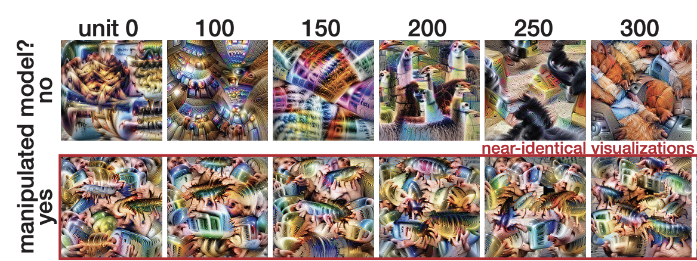

Google AI blog post: Enabling Creative Expression with Concept Activation Vectors
Mood Board Search: AI Experiments Page / GitHub
CAV Camera: AI Experiments Page / Play Store
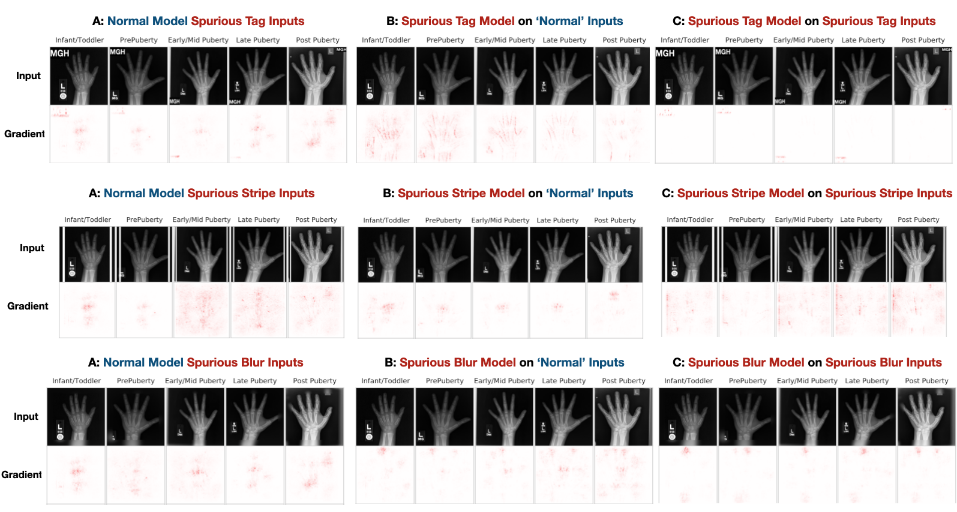


Don't trust your eyes: on the (un)reliability of feature visualizations
Robert Geirhos, Roland S. Zimmermann, Blair Bilodeau, Wieland Brendel, Been Kim
[ICML 2024]
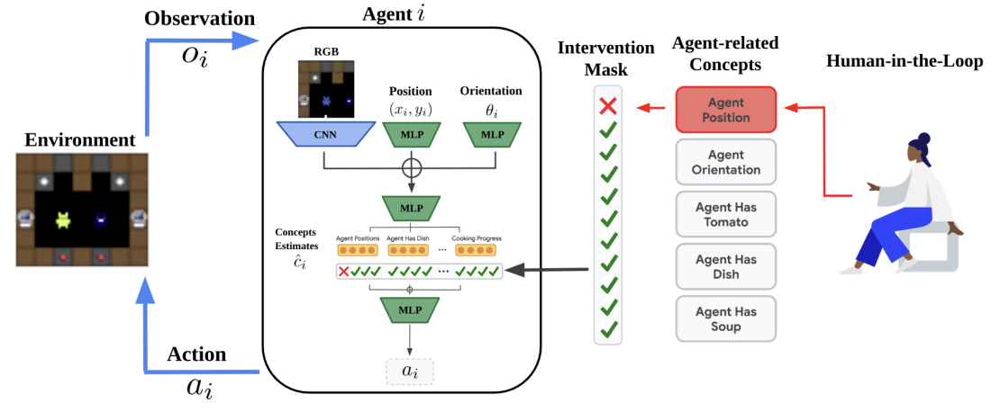
[ICML 2024]
Concept-based Understanding of Emergent Multi-Agent Behavior
Niko Grupen, Natasha Jaques, Been Kim, Shayegan Omidshafiei
[arxiv]
[arxiv]
Bridging the Human-AI Knowledge Gap: Concept Discovery and Transfer in AlphaZero
TL;DR:
Pushing the frontier of human knowledge by developing interpretability tools to teach humans something new. This work provides quantitative evidence that learning from something only machines know (M-H space) is possible. We discover super-human chess strategies from AlphaZero and teach them to four amazing grandmasters.
The quantitative evidence: we measure grandmasters' baseline performance on positions that invoke the concept. After teaching (shown AZ moves), they can solve puzzles better on unseen positions.
Lisa Schut, Nenad Tomasev, Tom McGrath, Demis Hassabis, Ulrich Paquet, Been Kim
[arxiv 2023]
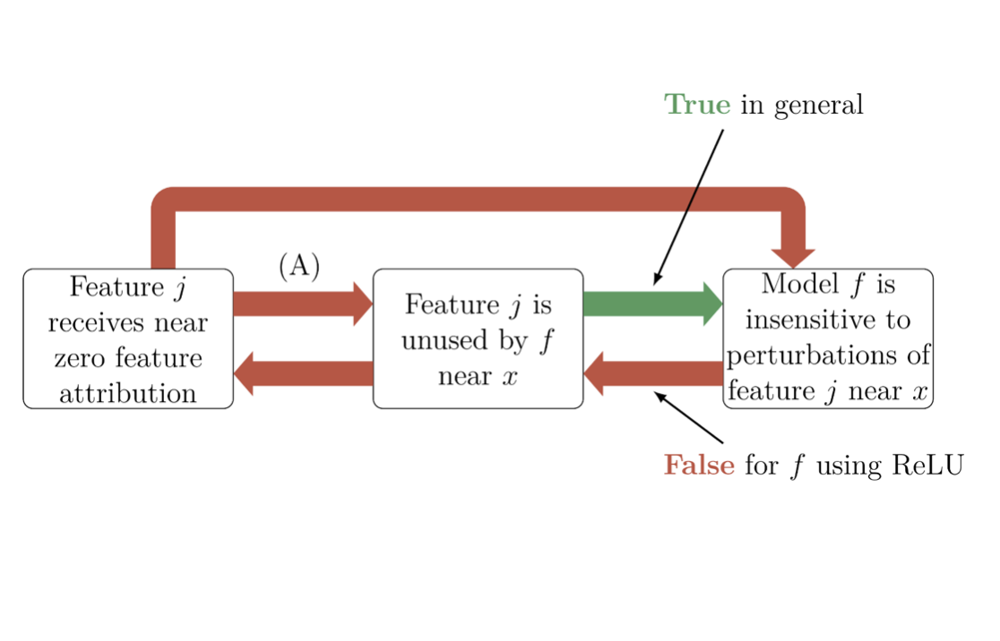
[arxiv 2023]
Impossibility Theorems for Feature Attribution
TL;DR: We can theoretically prove that just because popular attribution methods tell you there is X attribution to a feature, doesn’t mean you can conclude anything about the actual model's behavior.
Blair Bilodeau, Natasha Jaques, Pang Wei Koh, Been Kim
[PNAS 2023]
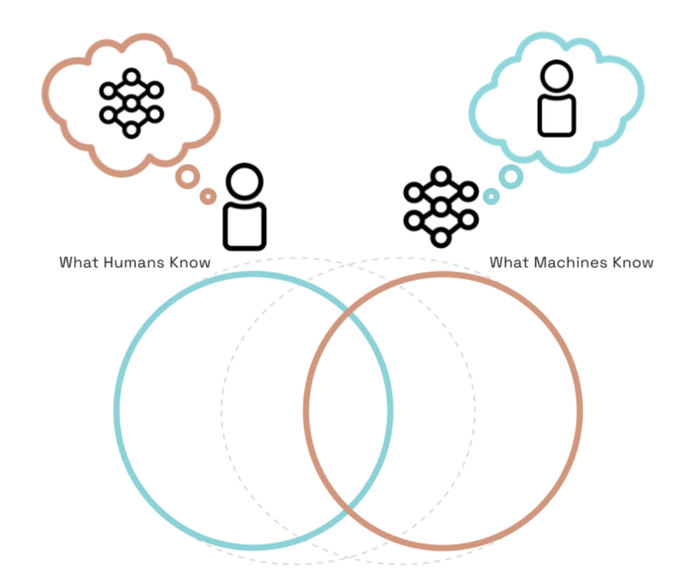
[PNAS 2023]
Socially intelligent machines that learn from humans and help humans learn
TL;DR: We need AI systems that can consider human minds so that they can learn more effectively from humans (as
learners) and even help humans learn (as teachers).
Hyowon Gweon, Judith Fan and Been Kim
[Philosophical Transactions of the Royal Society A: Mathematical, Physical and Engineering Sciences 2023]
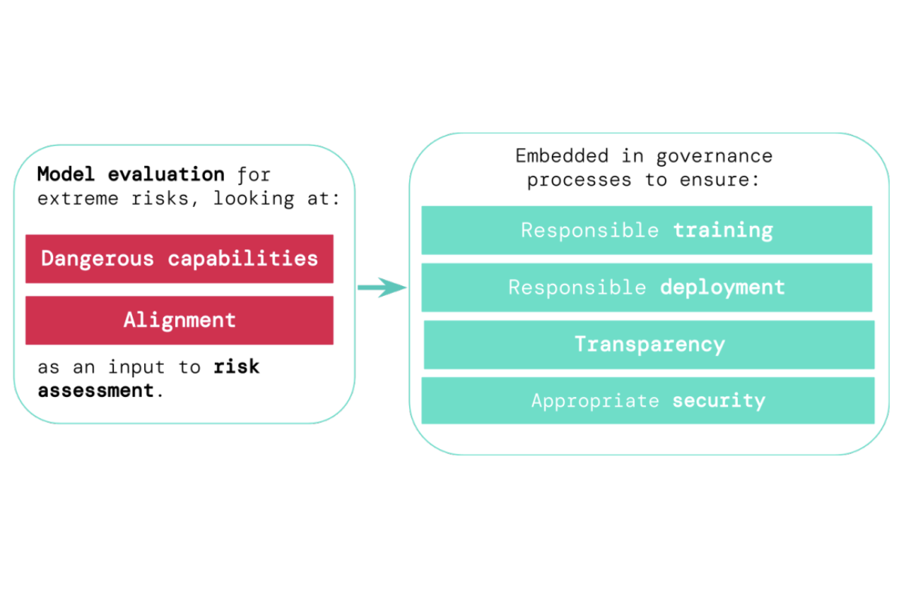
[Philosophical Transactions of the Royal Society A: Mathematical, Physical and Engineering Sciences 2023]
Model evaluation for extreme risks
TL;DR: Model evaluation is critical for addressing extreme risks.
Toby Shevlane, Sebastian Farquhar, Ben Garfinkel, Mary Phuong, Jess Whittlestone, Jade Leung, Daniel Kokotajlo, Nahema Marchal, Markus Anderljung, Noam Kolt, Lewis Ho, Divya Siddarth, Shahar Avin, Will Hawkins, Been Kim, Iason Gabriel, Vijay Bolina, Jack Clark, Yoshua Bengio, Paul Christiano, Allan Dafoe
[arxiv]
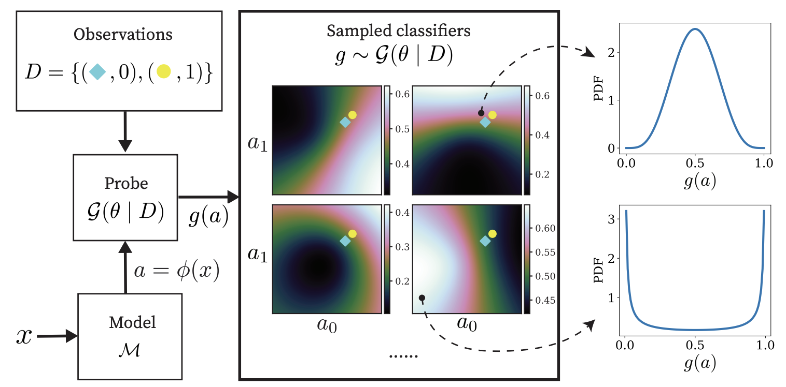
[arxiv]
Gaussian Process Probes (GPP) for Uncertainty-Aware Probing
TL;DR: A probing method that can also provide epistemic and aleatory uncertainties about its probing.
Zi Wang, Alexander Ku, Jason Baldridge, Thomas L. Griffiths, Been Kim
[Neurips2023]
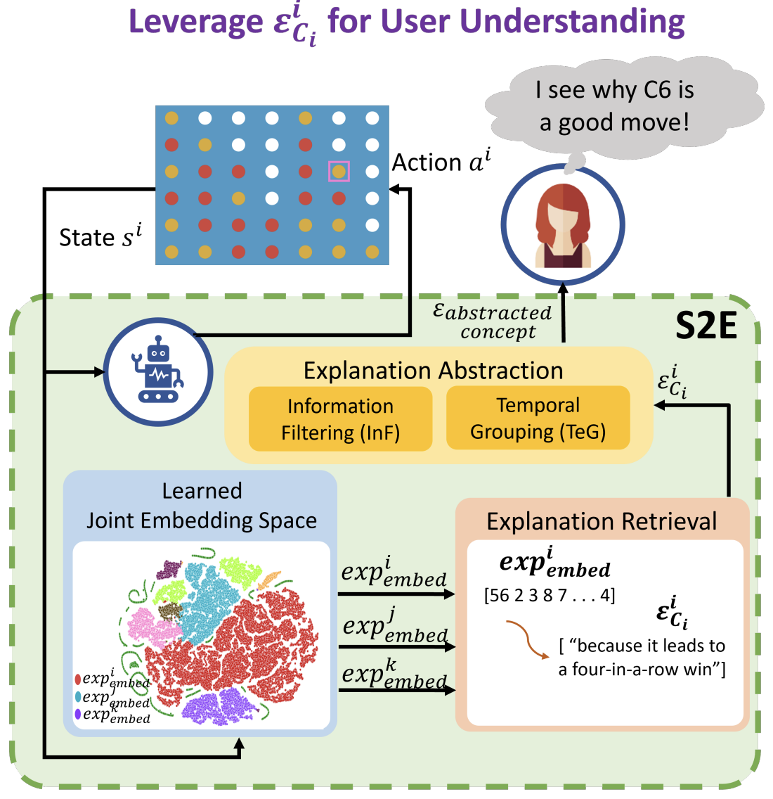
[Neurips2023]
State2Explanation: Concept-Based Explanations to Benefit Agent Learning and User Understanding
TL;DR:
Protégé Effect: use joint embedding model to 1) inform RL reward shaping and 2) provide explanations that improves task performance for users.
Devleena Das, Sonia Chernova, Been Kim
[Neurips2023]
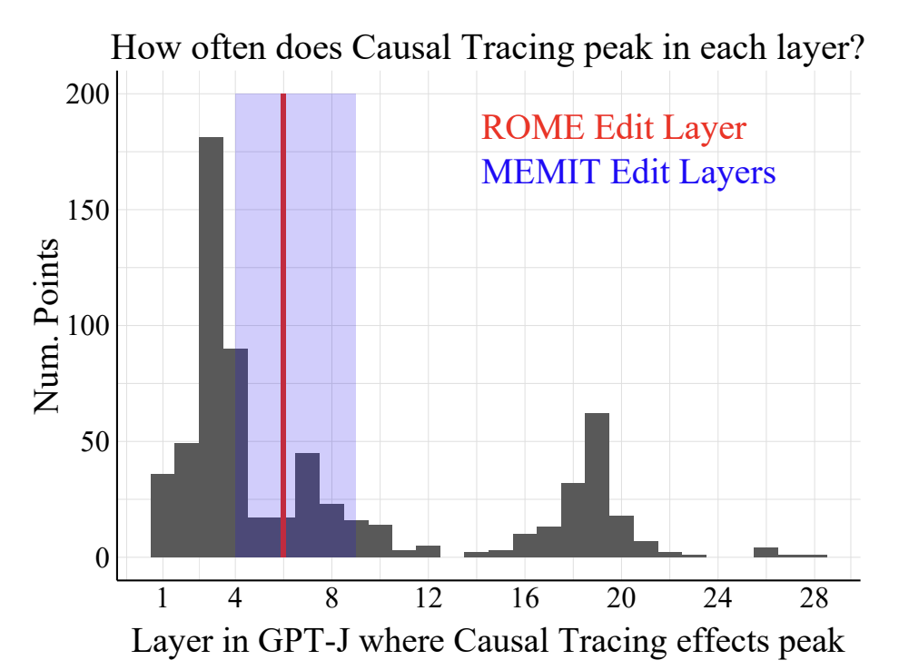
[Neurips2023]
Does Localization Inform Editing? Surprising Differences in Causality-Based Localization vs. Knowledge Editing in Language Models
TL;DR: Surprisingly, localization (where a fact is stored) in LLM has no correlation with editing success.
Peter Hase, Mohit Bansal, Been Kim, Asma Ghandeharioun
[Neurips2023]
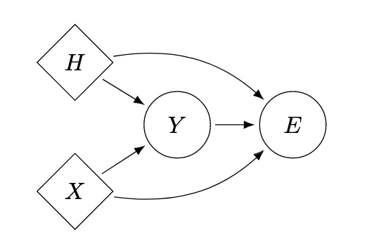
[Neurips2023]
On the Relationship Between Explanation and Prediction: A Causal View
TL;DR: There is not much.
Amir-Hossein Karimi, Krikamol Muandet, Simon Kornblith, Bernhard Schölkopf, Been Kim
[ICML 2023]
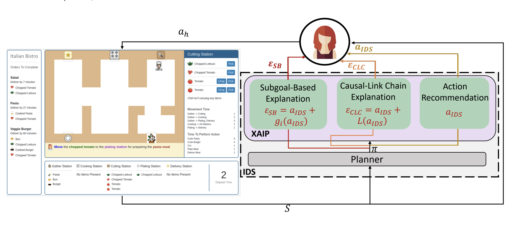
[ICML 2023]
Subgoal-based explanations for unreliable intelligent decision support systems
TL;DR: Even when explanations are not perfect, some types of explanations (subgoal-based) can be helpful for training humans in complex tasks.
Devleena Das, Been Kim, Sonia Chernova
[IUI 2023]
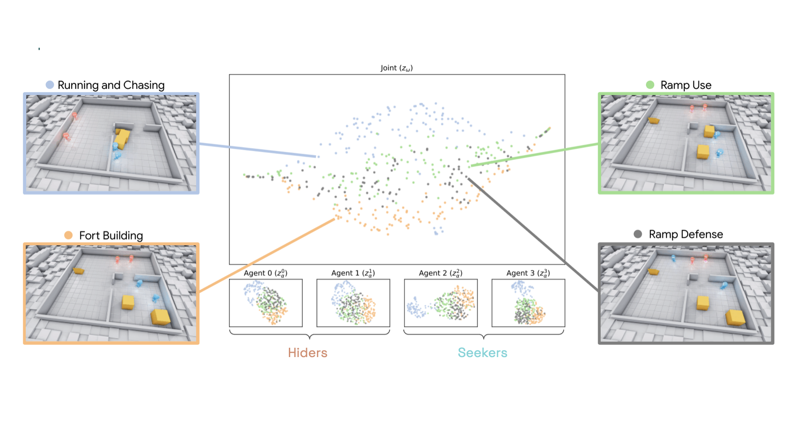
[IUI 2023]
Beyond Rewards: a Hierarchical Perspective on Offline Multiagent Behavioral Analysis
TL;DR:Treat neural networks as if they were a new species in the wild. Conduct an observational study to learn emergent behaviors of the multi-agent RL system.
Shayegan Omidshafiei, Andrei Kapishnikov, Yannick Assogba, Lucas Dixon, Been Kim
[Neurips 2022]
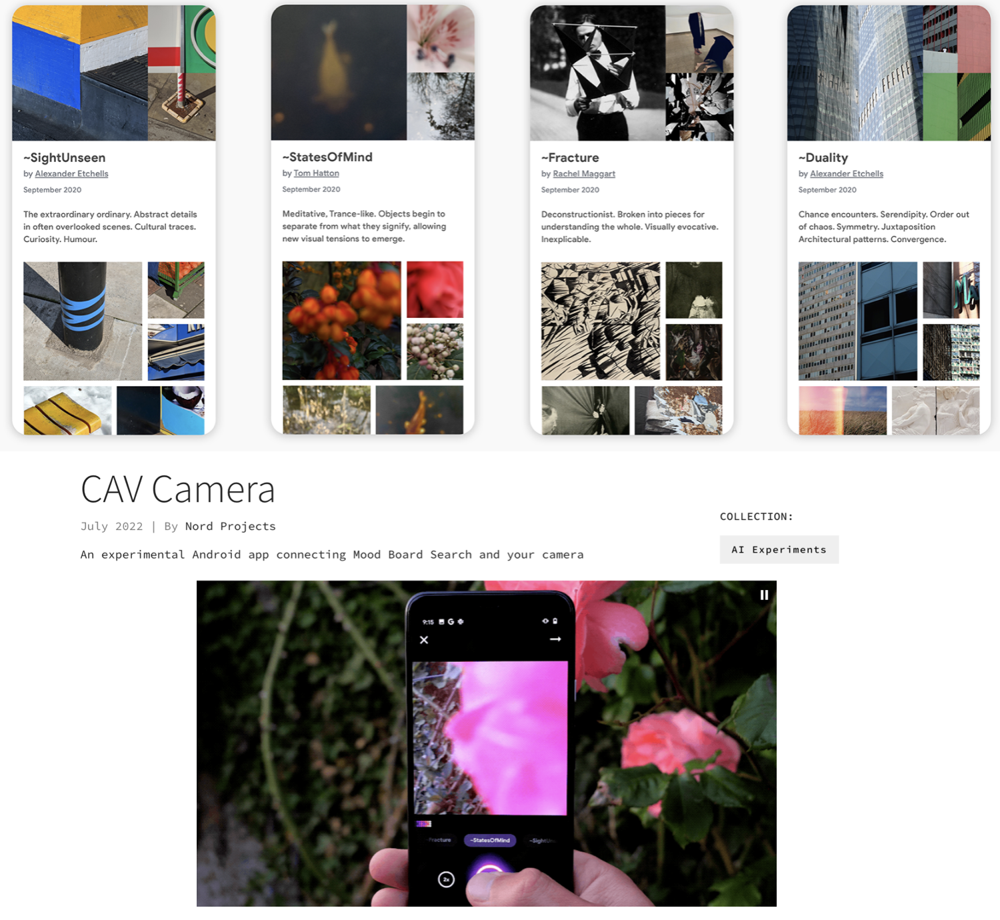
[Neurips 2022]
Mood board search & CAV Camera
TL;DR: Together with artists, designers and ML experts, we experiment with ways in which machine learning can inspire creativity--especially in photography. We open sourced the back-end, and published an Android app.
Google AI blog post: Enabling Creative Expression with Concept Activation Vectors
Mood Board Search: AI Experiments Page / GitHub
CAV Camera: AI Experiments Page / Play Store
Post hoc Explanations may be Ineffective for Detecting Unknown Spurious Correlation
TL;DR: If you know what type of spurious correlations your model may have, you can test them using existing methods. But if you don't know what they are, you can't test them. Many existing interpretability methods can't help you either.
Julius Adebayo, Michael Muelly, Hal Abelson, Been Kim
[ICLR 2022]
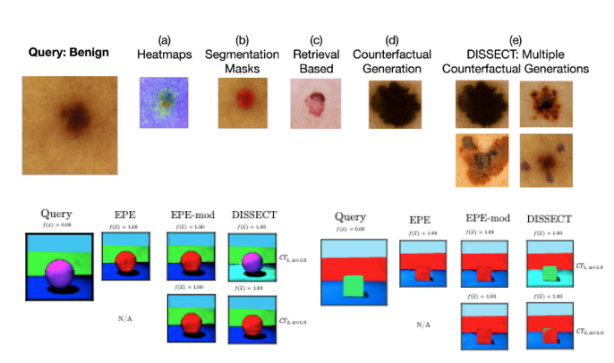
[ICLR 2022]
DISSECT: Disentangled Simultaneous Explanations via Concept Traversals
TL;DR: Can we automatically learn concepts tht are relevant to a prediction (e.g., pigmentation), and generate new set of images that would follow the concept trajectory (more or less concept)? Yes.
Asma Ghandeharioun, Been Kim, Chun-Liang Li, Brendan Jou, Brian Eoff, Rosalind W. Picard
[ICLR 2022]
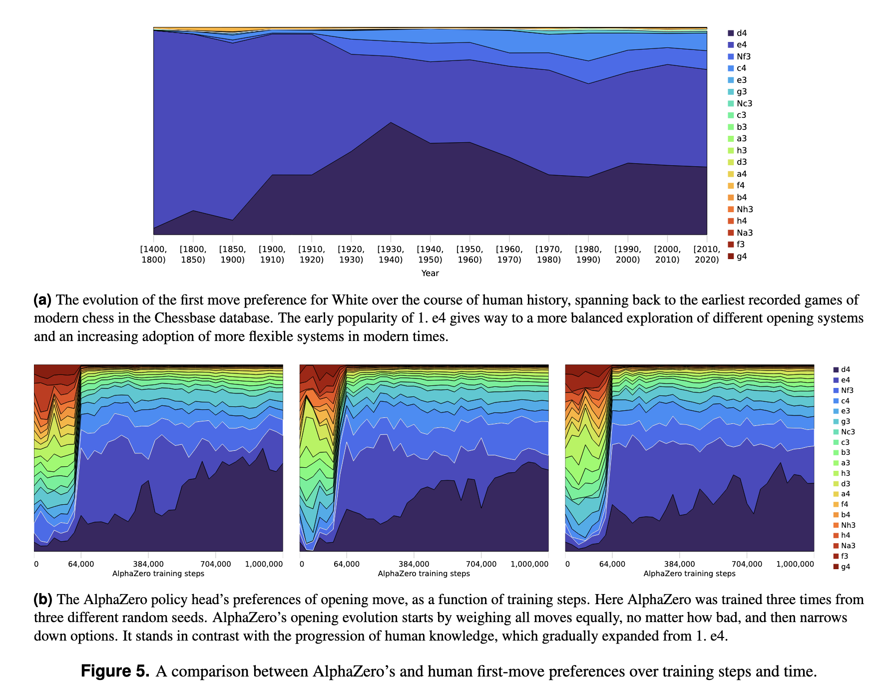
[ICLR 2022]
Acquisition of Chess Knowledge in AlphaZero
TL;DR: How does the super-human self-taught chess play machine--AlphaZero--learn to play chess, and what can we learn about chess from it? We investigate the emergence of human concepts in AlphaZero and the evolution of its play through training.
Thomas McGrath, Andrei Kapishnikov, Nenad Tomašev, Adam Pearce, Demis Hassabis, Been Kim, Ulrich Paquet, Vladimir Kramnik
[PNAS] [visualization]
[PNAS] [visualization]
Machine Learning Techniques for Accountability
TL;DR: Pros and cons of accountability methods
Been Kim, Finale Doshi-Velez
[PDF]
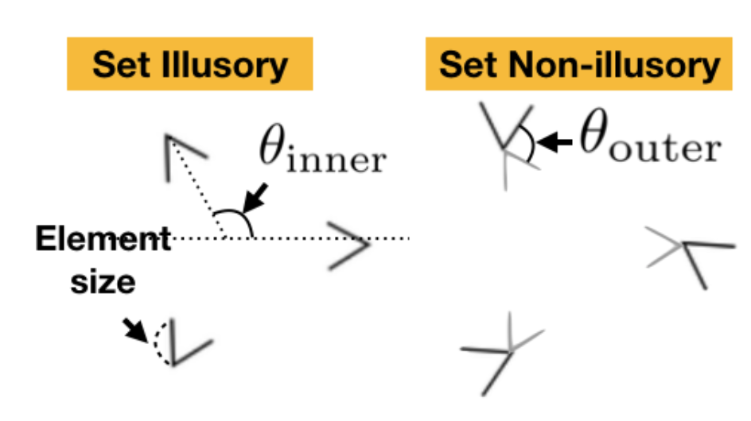
[PDF]
Do Neural Networks Show Gestalt Phenomena? An Exploration of the Law of Closure
TL;DR: It does. And it might be related to how NNs can generalize.
Been Kim, Emily Reif, Martin Wattenberg, Samy Bengio
[arxiv link] [Computational Brain & Behavior 2021]
[MIT Technology Review]
[arxiv link] [Computational Brain & Behavior 2021]
[MIT Technology Review]
On Completeness-aware Concept-Based Explanations in Deep Neural Networks
TL;DR: Let's find set of concepts that are "sufficient" to explain predictions.
Chih-Kuan Yeh, Been Kim, Sercan O. Arik, Chun-Liang Li, Tomas Pfister, Pradeep Ravikumar
[Neurips 20]
[Neurips 20]
Debugging Tests for Model Explanations
TL;DR: Sanity check2.
Julius Adebayo, Michael Muelly, Ilaria Liccardi, Been Kim
[Neurips 20]
[Neurips 20]
Concept Bottleneck Models
TL;DR: Build a model where concepts are built-in so that you can control influential concepts.
Pang Wei Koh, Thao Nguyen, Yew Siang Tang, Stephen Mussmann, Emma Pierson, Been Kim, Percy Liang
[ICML 20] [Featured at Google Research review 2020]
[ICML 20] [Featured at Google Research review 2020]
Explaining Classifiers with Causal Concept Effect (CaCE)
TL;DR: Make TCAV causal.
Yash Goyal, Amir Feder, Uri Shalit, Been Kim
[arxiv]
[arxiv]
Towards Automatic Concept-based Explanations
TL;DR: Automatically discover high-level concepts that explain a model's prediction.
BIM: Towards Quantitative Evaluation ofInterpretability Methods with Ground Truth
TL;DR: Datasets, models and metrics to quantitatively evaluate your interpretability methods with groundtruth. We compare many widely used methods and report their rankings.
Visualizing and Measuring the Geometry of BERT
TL;DR: Studying geometry of BERT to gain insights behind their impressive performance.
Andy Coenen, Emily Reif, Ann Yuan, Been Kim, Adam Pearce, Fernanda Viégas, Martin Wattenberg
[Neurips 19] [blog post]
[Neurips 19] [blog post]
Evaluating Feature Importance Estimates
TL;DR: One idea to evaluate attribution methods.
Sara Hooker, Dumitru Erhan, Pieter-Jan Kindermans, Been Kim
[Neurips 19]
[Neurips 19]
Human Evaluation of Models Built for Interpretability
TL;DR: What are the factors of explanation that matter for better interpretability and in what setting? A large-scale study to answer this question.
Isaac Lage, Emily Chen, Jeffrey He, Menaka Narayanan, Been Kim, Samuel Gershman and Finale Doshi-Velez
[HCOMP 19] (best paper honorable mention)
[HCOMP 19] (best paper honorable mention)
Human-Centered Tools for Coping with Imperfect Algorithms during Medical Decision-Making
TL;DR: A tool to help doctors to navigate medical images using medically-relevant similarties. This work uses a part of TCAV idea to sort images with concepts.
Carrie J. Cai, Emily Reif, Narayan Hegde, Jason Hipp, Been Kim, Daniel Smilkov, Martin Wattenberg, Fernanda Viegas, Greg S. Corrado, Martin C. Stumpe, Michael Terry
CHI 2019 (best paper honorable mention)
[pdf]
CHI 2019 (best paper honorable mention)
[pdf]
Interpreting Black Box Predictions using Fisher Kernels
TL;DR: Answering "which training examples are most responsible for a given set of predictions?" Follow up of MMD-critic [NeurIPS 16]. The difference is that now we pick examples informed by how the classifier sees them!
Rajiv Khanna, Been Kim, Joydeep Ghosh, Oluwasanmi Koyejo
[AISTATS 2019]
[AISTATS 2019]
To Trust Or Not To Trust A Classifier
TL;DR: A very simple method that tells you whether to trust your prediction or not, that happens to also have nice theoretical properties!
Human-in-the-Loop Interpretability Prior
TL;DR: Ask humans which models are more interpretable DURING the model training. This gives us a more interpretable model for the end-task.
Isaac Lage, Andrew Slavin Ross, Been Kim, Samuel J. Gershman, Finale Doshi-Velez
[Neurips 2018]
[Neurips 2018]
Sanity Checks for Saliency Maps
TL;DR: Saliency maps are popular post-training interpretability methods that claim to show the 'evidence' of predictions. But it turns out that they have little to do with the model's prediction! Some saliency maps produced from a trained network and a random network (with random prediction) are visually indistinguishable.
Julius Adebayo, Justin Gilmer, Ian Goodfellow, Moritz Hardt, Been Kim
[Neurips 18]
[Neurips 18]
Interpretability Beyond Feature Attribution: Quantitative Testing with Concept Activation Vectors (TCAV)
TL;DR: We can learn to represent human-concepts in any layer of already-trained neural networks. Then we can ask how important were those concepts for a prediction.
Been Kim, Martin Wattenberg, Justin Gilmer, Carrie Cai, James Wexler, Fernanda Viegas, Rory Sayres
[ICML 18] [code] [bibtex] [slides]
 Sundar Pichai (CEO of Google)'s presenting TCAV as a tool to build AI for everyone at his keynote speech at Google I/O 2019
[video]
Sundar Pichai (CEO of Google)'s presenting TCAV as a tool to build AI for everyone at his keynote speech at Google I/O 2019
[video]
[ICML 18] [code] [bibtex] [slides]
Sundar Pichai (CEO of Google)'s presenting TCAV as a tool to build AI for everyone at his keynote speech at Google I/O 2019
[video]
The (Un)reliability of saliency methods
TL;DR: Existing saliency methods could be unreliable; we can make them show whatever we want by simply introducing constant shift in the input (not even adversarial!).
Pieter-Jan Kindermans, Sara Hooker, Julius Adebayo, Maximilian Alber, Kristof T. Schütt, Sven Dähne, Dumitru Erhan, Been Kim
[NIPS workshop 2017 on Explaining and Visualizing Deep Learning] [bibtex]
[NIPS workshop 2017 on Explaining and Visualizing Deep Learning] [bibtex]
SmoothGrad: removing noise by adding noise
Daniel Smilkov, Nikhil Thorat, Been Kim, Fernanda Viégas, Martin Wattenberg
[ICML workshop on Visualization for deep learning 2017] [code]
[ICML workshop on Visualization for deep learning 2017] [code]
QSAnglyzer: Visual Analytics for Prismatic Analysis of Question Answering System Evaluations
Towards A Rigorous Science of Interpretable Machine Learning
Finale Doshi-Velez and Been Kim
Springer Series on Challenges in Machine Learning: "Explainable and Interpretable Models in Computer Vision and Machine Learning" [pdf]
Springer Series on Challenges in Machine Learning: "Explainable and Interpretable Models in Computer Vision and Machine Learning" [pdf]
Examples are not Enough, Learn to Criticize! Criticism for Interpretability
Mind the Gap: A Generative Approach to Interpretable Feature Selection and Extraction
iBCM: Interactive Bayesian Case Model Empowering Humans via Intuitive Interaction
Bayesian Case Model:
A Generative Approach for Case-Based Reasoning and Prototype Classification
A Generative Approach for Case-Based Reasoning and Prototype Classification
Been Kim, Cynthia Rudin and Julie Shah
[NIPS 14] [poster] This work was featured on MIT news and MIT front page spotlight.
[NIPS 14] [poster] This work was featured on MIT news and MIT front page spotlight.
Scalable and interpretable data representation for
high-dimensional complex data
high-dimensional complex data
A Bayesian Generative Modeling with Logic-Based Prior
Been Kim, Caleb Chacha and Julie Shah
[Journal of Artificial Intelligence Research (JAIR) 2014]
[Journal of Artificial Intelligence Research (JAIR) 2014]
Learning about Meetings
Been Kim and Cynthia Rudin
[Data Mining and Knowledge Discovery Journal 2014] This work was featured in Wall Street Journal.
[Data Mining and Knowledge Discovery Journal 2014] This work was featured in Wall Street Journal.
Inferring Robot Task Plans from Human Team Meetings:
A Generative Modeling Approach with Logic-Based Prior
A Generative Modeling Approach with Logic-Based Prior
Been Kim, Caleb Chacha and Julie Shah
[AAAI 13] [video] This work was featured in:
"Introduction to AI" course at Harvard (COMPSCI180: Computer science 182) by Barbara J. Grosz.
[Course website]
"Human in the loop planning and decision support" tutorial at AAAI15 by Kartik Talamadupula and Subbarao Kambhampati.
[slides From the tutorial] <
[AAAI 13] [video] This work was featured in:
"Introduction to AI" course at Harvard (COMPSCI180: Computer science 182) by Barbara J. Grosz.
[Course website]
"Human in the loop planning and decision support" tutorial at AAAI15 by Kartik Talamadupula and Subbarao Kambhampati.
[slides From the tutorial] <
PhD Thesis: Interactive and Interpretable Machine Learning Models for Human Machine Collaboration
Multiple Relative Pose Graphs for Robust Cooperative Mapping
Talks
This list is serously out of date. -> I generally give a lot of talks.
Invited talk at Applied and Theoretical Statistics (CATS) from the National Academies of Sciences, Engineering, and Medicine
Invited talk at ACL 2022 Repl4NLP workshop
Invited talk at CVPR 2022 workshop XAI4CV
Invited keynote at Machine Learning for Health Care 2022
Inited talk at ICML 2022 Interpretable Machine Learning in Healthcare workshop
Invited keynote at ICLR 2022
Invited lecture at Brown University Deep Learning course
Invited talk at KAIST International Symposium on AI and Future Society
Invited talk at Samsung AI forum 2021
Invited session talk at Informs conference 2021
Invited talk at ICCV 2021 workshop Neural Architectures: Past, Present and Future
Invited keynote at MICCAI 2021 workshop on "Interpretability of Machine Intelligence in Medical Image Computing"
Neurips 2021 workshop on Algorithmic Fairness through the Lens of Causality and Robustness
Invited tutorial at Annual Machine Learning Summer School 2021
Invited talk at ICML 2021 Workshop on Algorithmic Recourse
Invited talk at CVPR SAIAD 2021: Safe Artificial Intelligence for Automated Driving
Invited at
ICAPS 2021 International Workshop of Explainable AI Planning (XAIP)
Invited lecture at Machine Learning Summer School 2021 MLSS
KAIST CS774 AI & Ethics Guest Lecture
Invited talk at ICLR-21 Workshop on Responsible AI
Invited talk at Distinguished Speakers: Oxford Women in Computer Science
MIT career forum: Academia vs Industry? 2021
Invited talk CMU AI seminar
Invited keynote
Federal Reserve AI Symposium 2021
Invited panel AAAI 2021 Explainable Agency in Artificial Intelligence Workshop
Invited talk Distinguished Speakers: Oxford Women in Computer Science
Invited talk Robust machine learning group at Oxford, 2021
Guest lecture at Stanford class CS81SI 2020
Invited keynote at ECML 2020
...Maternity leave for a while in 2020!...
Invited talk at Facebook
Invited forum at Humans of AI, Stanford 2020
Invited talk at Women in Data Science at Stanford 2020
Invited talk at IAS on New Directions in Optimization, Statistics and Machine Learning April 15-17, 2020
Invited interview at Google's Techspert
Invited keynote at HCOMP 2019
Invited keynote at Visualization in Data Science (VDS) 2019
Invited talk at Neurips Expo 19, Google speaker
Invited talk at Human centered ML (HCML) workshop at Neurips 19
Invited panel at Minding the Gap workshop at Neurips 19
Invited panel at Science meets Engineering of Deep Learning workshop Neurips 19
Invited talk at Security and privacy in ML workshop ICML 19
Invited talk at Workshop on Explainable AI CVPR 19
Invited talk at Safe Artificial Intelligence for Automated Driving CVPR 19
Invited talk at KDD XAI workshop 2019
Invited lecture at Stanford Dawn seminar 2019
Invited lecture at UW CSE AI Seminar
Invited lecture at UC Berkeley for seminar course Special Topics in Deep Learning
Invited tutorial at Deep Learning for Science School at Lawrence Berkeley National Laboratory 2019
Invited tutorial at Dagstuhl “Machine Learning Meets Visualization to Make Artificial Intelligence Interpretable” 2019
Invited talk at Simon’s workshop on Foundations of Deep Learning at UC Berkeley: Emerging Challenges in Deep Learning
Invited talk at Simon’s workshop on Foundations of Deep Learning at UC Berkeley: Frontiers of Deep Learning
Invited interview with Parsing science podcast: designed to explain science for lay people.
G20 meeting in Argentina in 2019
Invited talk at NIPS 2018 workshop on Security in Machine Learning 2018
Invited talk at Statistics and Data Science Conference (SDSCon) at Data Systems and Society at MIT
Invited talk at BBC AI conference
Invited talk at ML conf 2018
Invited talk at CodeX FutureLaw conference at Stanford law school 2018
Invited talk at Interpretable Machine Learning for Computer Vision CVPR 2018
Invited tutorial at Deep Learning Summer School at University of Toronto/Vector institute 2018
Invited keynote at Visualization for AI Explainability at IEEE VISi 2018
Invited talk at Human in the Loop Machine Learning workshop ICML 2017
Invited talk at Reliable ML in the wild workshop ICML 2017
Invited tutorial at ICML 2017 video
Invited talk at Interpreting, Explaining and Visualizing Deep Learning
Invited keynote at SF rework 2017
Invited talk at IBM on “interpretable and interactive machine learning” 2017
Invited talk at South Park commons 2017
Selected Media Coverage
Quantas magazine A New Approach to Understanding How Machines Think
Znet Google says it will address AI, machine learning model bias with technology called TCAV
cnet Google working to fix AI bias problems
Parsing Science Behind the Curtain of Algorithms – Been Kim
Anlytics insight AI/ML Model Bias To Be Adressed With TCAV Technology, Says Google CEO
Digital Information World Google to Introduce Two New Tools to End Bias in Artificial Intelligence
Magenta How a Google Researcher Is Making AI Easier to Understand, Magenta
siliconANGLE Google combats machine learning bias with open-source tech
Towards data science An overview of GoogleAI’s model Interpretability technique in terms of human-friendly concepts.
techiexpert Google Brain Built a Translator so AI Can Explain Itself
Allerin Addressing AI and ML bias with TCAV technology
BBNtimes Addressing artificial intelligence and machine learning bias with TCAV technology
Kdnuggets This New Google Technique Help Us Understand How Neural Networks are Thinking
Talking machines 2018
MIT news Computers that teach by example
WSJ At Work: Just Say `Yeah’
Forbes How To Win Over Co-Workers And Influence Meetings: Use These 3 Words
ABC news
Researchers Discover the Key to Persuasion
Yahoo news
5 Important Words to Say in Every Business Meeting